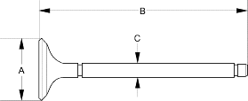

D17A2, D17A8, D17A9 engines:
Intake Valve Dimensions
A Standard (New):29.85 - 30.15 mm
(1.175 - 1.187 in.)
B Standard (New):118.27 - 118.87 mm
(4.656 - 4.680 in.)
C Standard (New):5.480 - 5.490 mm
(0.2157 - 0.2161 in.)
C Service Limit:5.45 mm (0.215 in.)
Exhaust Valve Dimensions
A Standard (New):25.85 - 26.15 mm
(1.018 - 1.030 in.)
B Standard (New):115.65 - 116.25 mm
(4.553 - 4.577 in.)
C Standard (New):5.450 - 5.460 mm
(0.2146 - 0.2150 in.)
C Service Limit:5.42 mm (0.213 in.)

Intake Valve Dimensions
A Standard (New):29.90 - 30.10 mm
(1.177 - 1.185 in.)
B Standard (New):118.27 - 118.87 mm
(4.656 - 4.680 in.)
C Standard (New):5.480 - 5.490 mm
(0.2157 - 0.2161 in.)
C Service Limit:5.45 mm (0.215 in.)
Exhaust Valve Dimensions
A Standard (New):25.90 - 26.10 mm
(1.020 - 1.028 in.)
B Standard (New):115.65 - 116.25 mm
(4.553 - 4.577 in.)
C Standard (New):5.450 - 5.460 mm
(0.2146 - 0.2150 in.)
C Service Limit:5.42 mm (0.213 in.)
